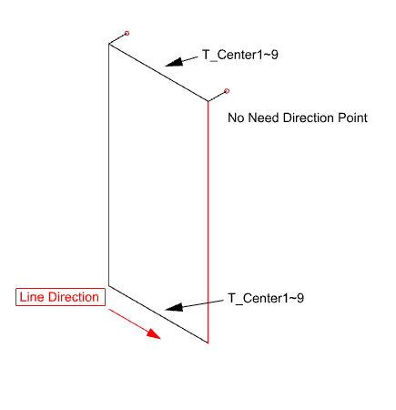

TC1 ~ TCXX
Transom Line은 Wire Frame에서 가로 방향 Transom 기준선을 정의하는 요소입니다. T_Center1부터 T_CenterXX까지의 레이어명을 사용해 Transom 중심선을 구분합니다.
가로 부재(Transom)의 중심선을 T_Center 레이어 체계로 정리해, 이후 단면 배치와 Unit 모델링(UMD)이 가로 기준선을 올바르게 인식하도록 준비할 때 사용합니다. Transom 번호 순서와 좌→우 방향을 맞춰 두면 모델링 결과의 부재 순서가 정확해집니다.
TC1 ~ TCXX 명령으로 선택한 선을 해당 `T_Center` 레이어로 지정합니다.
| 항목 | 설명 |
|---|---|
| 레이어 | T_Center1 ~ T_CenterXX |
| 작성 명령 | TC1 ~ TCXX |
| 방향 기준 | 좌에서 우 방향으로 작성합니다. |
| 명령어 | 설명 |
|---|---|
Mullion Line | 세로 방향 Mullion 기준선을 정의합니다. |
Direction Point | Mullion Line의 방향점을 지정합니다. |